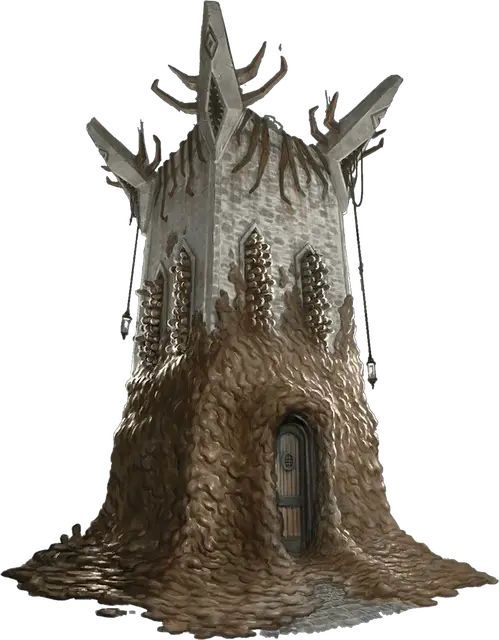

Грязевая башня
Mudslick Tower
Чудесный предмет, очень редкий (требуется настройка)

Рекомендованная стоимость 5 001-50 000 зм
Вы можете действием положить эту гранитную сферу диаметром 1 дюйм на землю и произнести её командное слово, которое на Терране означает «окаменение». Сфера быстро вырастает в толстую башню, которая остается до тех пор, пока вы действием не прикоснетесь к башне и снова не произнесете командное слово, после чего башня снова сжимается до гранитной сферы диаметром 1 дюйм. Чтобы уменьшиться таким образом, башня должна быть пустой. Башня усеяна грязными выступами, которые постоянно выдвигаются и втягиваются по ее поверхности, как будто башня дышит сквозь слой густой грязи.
Каждое существо в области, где появляется башня, должно совершить спасбросок Ловкости Сл 15, получая 10к10 дробящего урона при провале или половину этого урона при успехе. В любом случае существо выталкивается на незанятое место снаружи, но рядом с башней. Объекты в этой области, которые никто не несёт и носит, получают этот урон и автоматически толкаются.
Всякий раз, когда она расширяется, грязевая башня сливается с любым природным камнем, которого она касается, неуклюже наклоняясь и вклиниваясь, чтобы коснуться как можно большего количества природного камня.
Башня имеет ширину 20 футов и высоту 30 футов, с бойницами со всех сторон и зубчатыми стенами наверху. Её интерьер разделен на два этажа, соединенных между собой лестницей, проходящей вдоль одной стены. Лестница заканчивается люком, ведущим на крышу. При активации башня имеет небольшую дверь на стороне, обращенной к вам. Дверь открывается только по вашей команде, которую вы можете произнести бонусным действием. Она невосприимчива к заклинанию открывание [knock] и подобной магии, например, к колокольчику открывания [chime of opening].
Хотя башня выглядит как камень, она сделана из адамантина, и его магия не позволяет существам опрокинуть её. Крыша, дверь и стены имеют по 100 хитов каждая, иммунитет к урону от немагического оружия, за исключением осадных орудий, и сопротивление всем остальным видам урона. Будучи слитой с натуральным камнем, грязевая башня обладает иммунитетом ко всем повреждениям. Только заклинание исполнение желаний [wish] может восстановить башню (это использование заклинания считается копированием заклинания 8-го уровня или ниже). Каждое накладывание исполнение желаний [wish] заставляет крышу, дверь или одну стену восстанавливать 50 хитов.